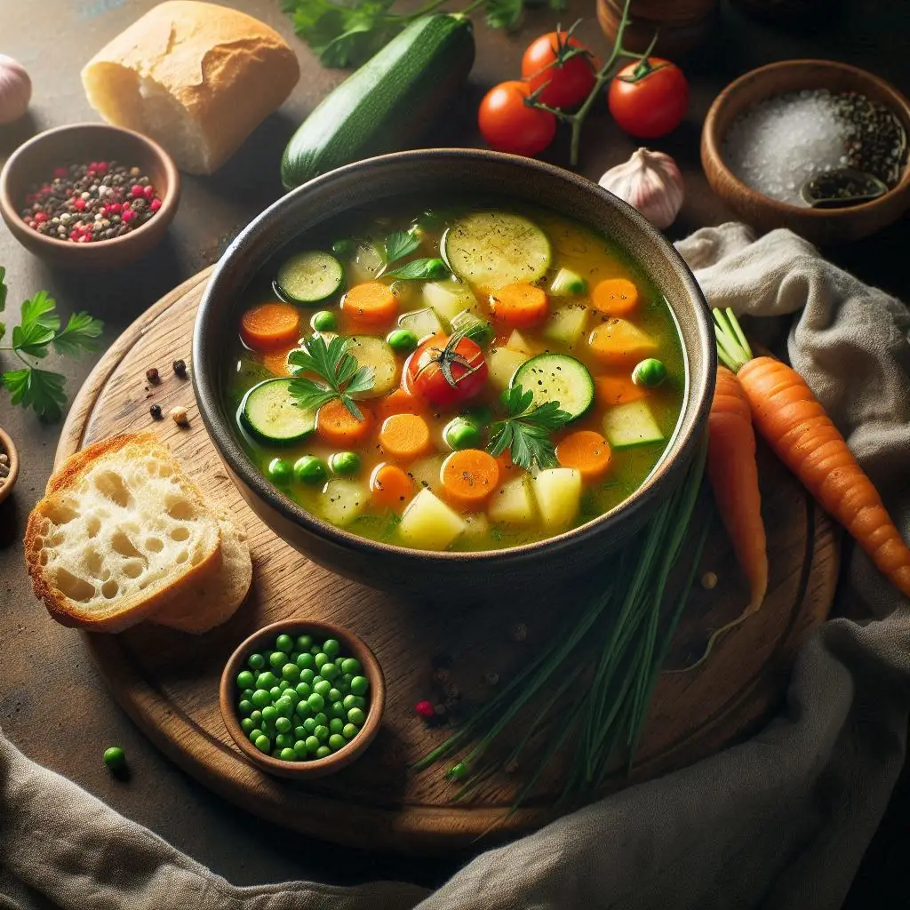

Un potage simple, sain et nourrissant préparé avec des légumes du quotidien. Cette soupe traditionnelle réchauffe les journées fraîches et apporte équilibre et réconfort à toute la famille.

"1. Éplucher les carottes.
"2. Couper les carottes en morceaux.
"3. Éplucher les pommes de terre.
"4. Couper les pommes de terre en morceaux.
"5. Laver le poireau.
"6. Couper le poireau en rondelles.
"7. Couper le céleri en morceaux.
"8. Éplucher l’oignon.
"9. Hacher l’oignon.
"10. Mettre la casserole sur feu moyen.
"11. Ajouter l’huile d’olive.
"12. Ajouter l’oignon.
"13. Faire revenir 5 minutes.
"14. Remuer régulièrement.
"15. Ajouter les carottes.
"16. Ajouter les pommes de terre.
"17. Ajouter le poireau.
"18. Ajouter le céleri.
"19. Verser le bouillon de légumes.
"20. Porter à ébullition.
"21. Baisser le feu.
"22. Laisser mijoter 25 minutes.
"23. Retirer du feu.
"24. Mixer la soupe.
"25. Obtenir une texture lisse.
"26. Ajouter le sel.
"27. Ajouter le poivre.
"28. Mélanger.
"29. Servir chaud.
==============================
INFORMATIONS & CONSEILS
==============================
Le potage de légumes est un classique incontournable des cuisines familiales belges. Préparé avec des légumes simples et économiques, il constitue une entrée saine et nourrissante.
Cette soupe peut varier selon les saisons : vous pouvez ajouter courgettes, navets ou chou pour adapter la recette aux légumes disponibles.
Pour plus d’onctuosité, ajoutez une cuillère de crème fraîche au moment du service. Servi avec du pain croustillant, ce potage devient un repas léger et complet.